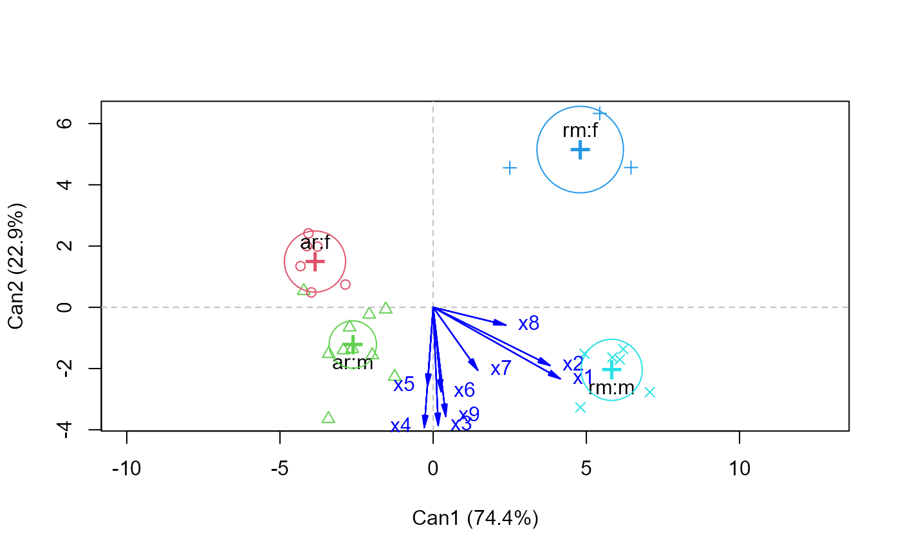
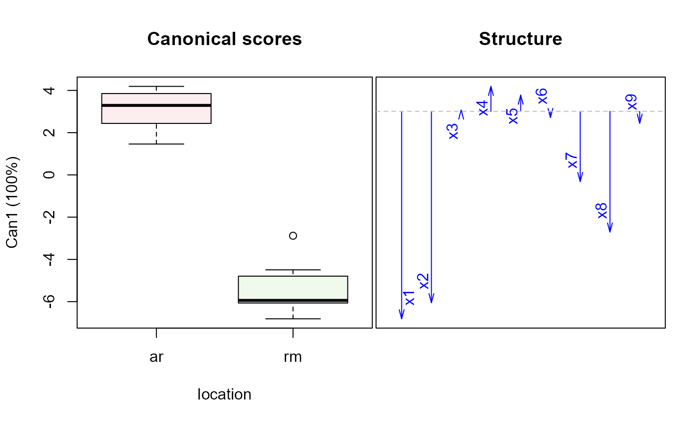
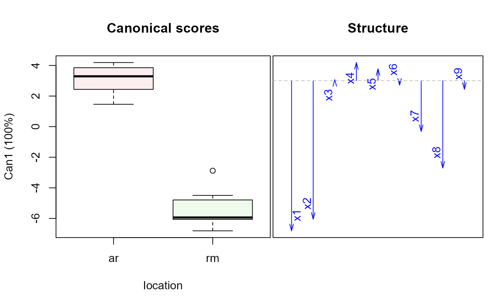
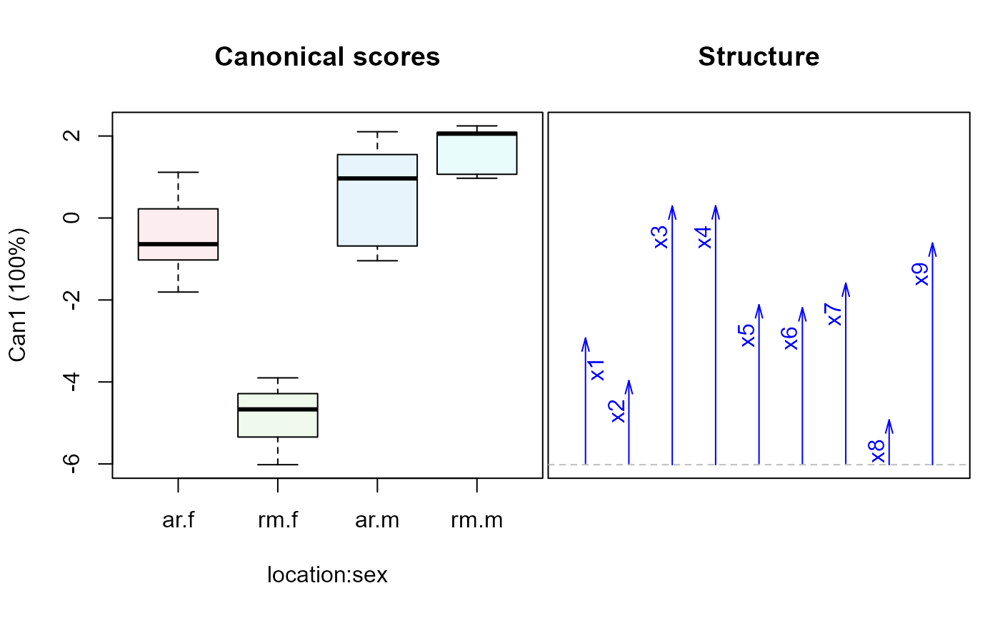
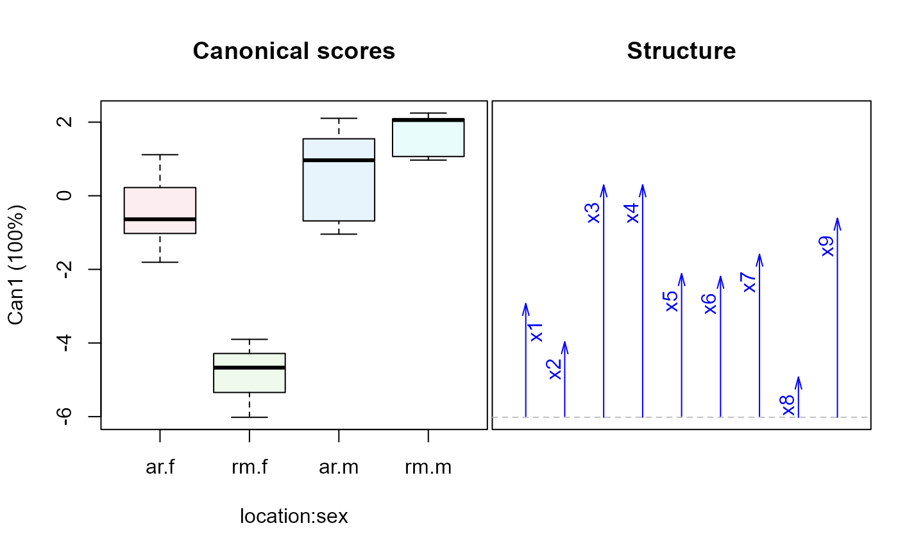

Skull morphometric data on Rocky Mountain and Arctic wolves (Canis Lupus L.) taken from Morrison (1990), originally from Jolicoeur (1959).
Format
A data frame with 25 observations on the following 11 variables.
groupa factor with levels
ar:far:mrm:frm:m, comprising the combinations oflocationandsexlocationa factor with levels
ar=Arctic,rm=Rocky Mountainsexa factor with levels
f=female,m=malex1palatal length, a numeric vector
x2postpalatal length, a numeric vector
x3zygomatic width, a numeric vector
x4palatal width outside first upper molars, a numeric vector
x5palatal width inside second upper molars, a numeric vector
x6postglenoid foramina width, a numeric vector
x7interorbital width, a numeric vector
x8braincase width, a numeric vector
x9crown length, a numeric vector
Source
Morrison, D. F. Multivariate Statistical Methods, (3rd ed.), 1990. New York: McGraw-Hill, p. 288-289.
% ~~ reference to a publication or URL from which the data were obtained ~~
Details
All variables are expressed in millimeters.
The goal was to determine how geographic and sex differences among the wolf
populations are determined by these skull measurements. For MANOVA or
(canonical) discriminant analysis, the factors group or
location and sex provide alternative parameterizations.
References
Jolicoeur, P. “Multivariate geographical variation in the wolf Canis lupis L.”, Evolution, XIII, 283–299.
Examples
data(Wolves)
# using group
wolf.mod <-lm(cbind(x1,x2,x3,x4,x5,x6,x7,x8,x9) ~ group, data=Wolves)
car::Anova(wolf.mod)
#>
#> Type II MANOVA Tests: Pillai test statistic
#> Df test stat approx F num Df den Df Pr(>F)
#> group 3 2.2454 4.9592 27 45 1.191e-06 ***
#> ---
#> Signif. codes: 0 '***' 0.001 '**' 0.01 '*' 0.05 '.' 0.1 ' ' 1
wolf.can <-candisc(wolf.mod)
plot(wolf.can)
#> Vector scale factor set to 4.885

heplot(wolf.can)
 #> Vector scale factor set to 12.04378
# using location, sex
wolf.mod2 <-lm(cbind(x1,x2,x3,x4,x5,x6,x7,x8,x9) ~ location*sex, data=Wolves)
car::Anova(wolf.mod2)
#>
#> Type II MANOVA Tests: Pillai test statistic
#> Df test stat approx F num Df den Df Pr(>F)
#> location 1 0.95246 28.938 9 13 3.624e-07 ***
#> sex 1 0.84633 7.955 9 13 0.0005229 ***
#> location:sex 1 0.64944 2.676 9 13 0.0523865 .
#> ---
#> Signif. codes: 0 '***' 0.001 '**' 0.01 '*' 0.05 '.' 0.1 ' ' 1
wolf.can2 <-candiscList(wolf.mod2)
plot(wolf.can2)

#> Vector scale factor set to 12.04378
# using location, sex
wolf.mod2 <-lm(cbind(x1,x2,x3,x4,x5,x6,x7,x8,x9) ~ location*sex, data=Wolves)
car::Anova(wolf.mod2)
#>
#> Type II MANOVA Tests: Pillai test statistic
#> Df test stat approx F num Df den Df Pr(>F)
#> location 1 0.95246 28.938 9 13 3.624e-07 ***
#> sex 1 0.84633 7.955 9 13 0.0005229 ***
#> location:sex 1 0.64944 2.676 9 13 0.0523865 .
#> ---
#> Signif. codes: 0 '***' 0.001 '**' 0.01 '*' 0.05 '.' 0.1 ' ' 1
wolf.can2 <-candiscList(wolf.mod2)
plot(wolf.can2)

 
